Agent-centric-real-to-sim · 归档于 2026-11-03
SceneRig
SceneRig: An Agentic System for Simulation-Ready 3D Scene Reconstruction from Single Images
归档到 Agent-centric real-to-sim：agent 把一张照片变成可仿真的 USD 场景，正是这个方向；它的 tool 设计（agent 选、工具搜、仿真验收）对 Robotic harness 也有参考价值。
TL;DR
- Problem
- 单图重建的场景"看起来对"，一放进物理仿真就漂浮、穿插、倾倒；事后整体 settle 又把物体推离照片里的位置。
- Idea
- agent 在 Blender + PhysX 里跑 edit-and-validate loop：agent 只决定"改哪个物体、改哪一类（xy / scale / yaw）"，
Move工具搜索幅度、仿真验收，不过关就回滚。 - Result
- 80 个场景 100% 通过稳定性测试（VIGA 10.0%）；机器人开环回放 20/25 vs SimFoundry 9/25；真机 policy 结果一致率 69% vs 54%。
Problem
照片看起来对 ≠ 放进仿真还站得住、还在原位
Running example · 后面每个 stage 都跟着它走
大理石桌面（论文 Fig. 2 和项目页方法部分的同一个场景）：一张照片，桌上有 cup + saucer、托盘里的 plate、金色勺子 spoon#1、蓝色餐巾 napkin#0 → 想要：一个 USD 场景，每个物体单独成刚体、位置和照片一致、5 s 重力仿真后不动，机器人可以直接在里面跑。
四类 baseline 在这个例子上
flowchart LR IN["输入照片
大理石桌面"] --> A1["VIGA
VLM 写 Blender 代码
只看画面"] A1 --> AX["物体几何被改掉
稳定场景 10.0%"]:::gap IN --> B1["REST3D /
SceneConductor
优化 + settle"] B1 --> BX["尺度、位置估错
OSPA@5 4.7 / 5.0 cm"]:::gap IN --> C1["SimFoundry
重建资产 + 事后 settle"] C1 --> CX["多出物体、网格粘连
回放 9/25"]:::gap IN --> D1["SAM3D 原始 pose
+ 事后 PhysX settle"] D1 --> DX["69% 物体陷进桌面
2/80 场景留在原位"]:::gap
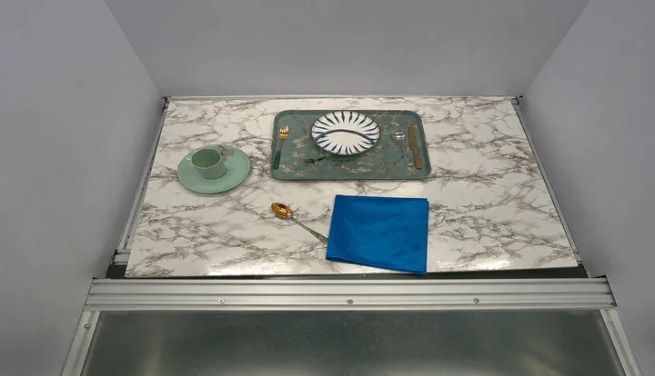
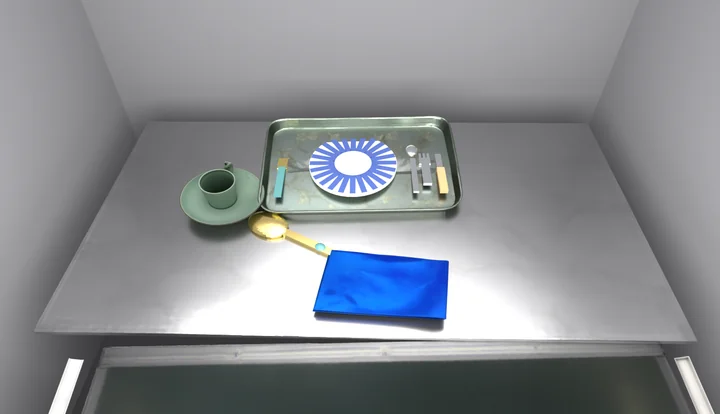
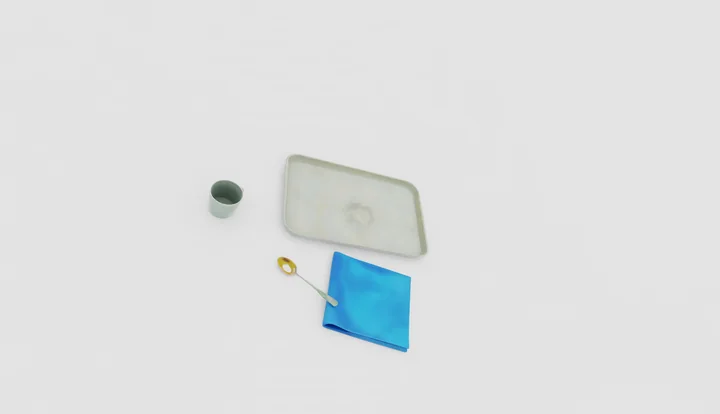
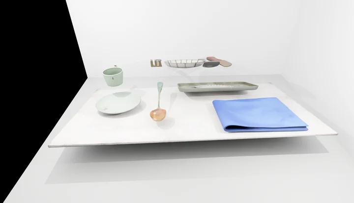
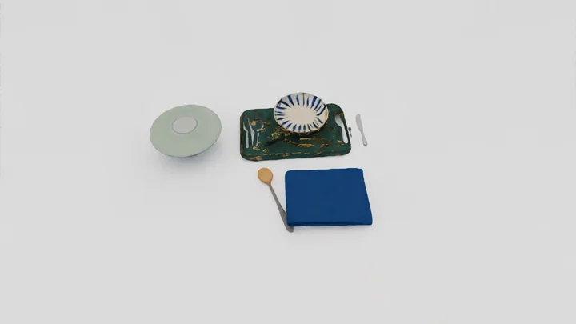
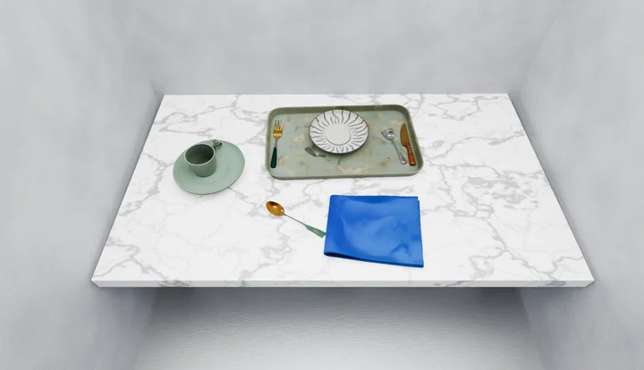
怎么读这组图
- VIGA：画面相似，但桌子成了金属板、盘子换成蓝条纹——它的 verifier 只比画面。
- REST3D：只剩 cup、tray、spoon、napkin 四件，而且整体缩小：尺度估错。
- SceneConductor：盘子、托盘一排悬在桌面上方：放置错。
- SimFoundry：物体都在，但杯碟变大、托盘形状变了；论文说它还会引入照片里没有的物体（§4.2）。
每条 lane 的现象：前三条是我对上面项目页渲染的观察，加上论文 §4.2 的描述；数字是整个 benchmark 的（Table 1、2），不是这一个场景的。SAM3D 那条来自 Appendix D.1：原始 pose 里 69% 的物体在支撑面以下（中位 17 mm）、15% 悬空，settle 后只有 2/80 个场景所有物体都在原位 10 mm 内。SimFoundry 的 9/25 来自 Table 5，网格粘连见 Fig. 5。
根本问题：位置要么靠 VLM 直接写坐标（没有 metric 感，§3.3 说它会"hallucinate these magnitudes"），要么靠事后一次性 settle，中间没有"改一下 → 量一下 → 仿真一下 → 不行就撤销"的闭环。 这篇的切入点：agent 负责诊断和选择，工具负责算幅度并在物理里验收。
Related work
| 相关工作 | 解决什么 | 怎么解决 | 和本文的区别 |
|---|---|---|---|
| 同一问题 · 别的解法 | |||
| Agentic 图像→场景（本文所属） VIGA, SEIG, SceneConductor | 单图 → Blender 场景 | VLM generator–verifier 写代码、比渲染 | 只有视觉检查 → 加 check_rules 门和带物理验收的 Move / Edit |
| 物理约束的单图重建 REST3D, TableVerse, φ-Scene, RoboSnap, SimuScene | 单图 → 稳定场景 | CEM / SDF / 碰撞平移优化，再 settle | 固定优化流程，不诊断"哪个物体错了" → agent 逐个 investigate 再选编辑类型 |
| Real-to-sim digital twin SimFoundry, Agentic Real2Sim, RialTo, Re3Sim | 视频 / 扫描 → 可交互仿真 | 重建资产，事后 settle | 事后 settle 把物体推离原位 → 单张图，按支撑顺序 settle，refinement 每步都仿真 |
| 物体级单图重建 SAM3D, CAST, MIDI, Total3D | 单图 → 物体网格 + 布局 | 生成或检索后对齐 | 只管外观、不管能否站住 → 用 SAM3D 做资产来源，补上 metric 初始化和物理 |
| 相似做法 · 别的问题 | |||
| Agentic 场景生成 SceneWeaver, Scenethesis, SAGE, SceneSmith | 文本 → 室内场景 | editor–critic 循环，数值 solver 摆放 | 目标只是"合理"，没有照片要对齐 → 每次编辑按照片轮廓 IoU 和深度打分 |
来源：论文 §2 Related Work 和 §4.1、Appendix C.1 的 baseline 说明；未另行检索。§2 还有一组 "Simulation for policy evaluation"（SIMPLER、PolaRiS、REALM），本文沿用 SIMPLER 的 MMRV 指标，见 Results E4。
Level 1 · Big picture
单图 → 场景图 → 按支撑顺序落座 → agent 搭环境 → agent 边改边仿真 → USD
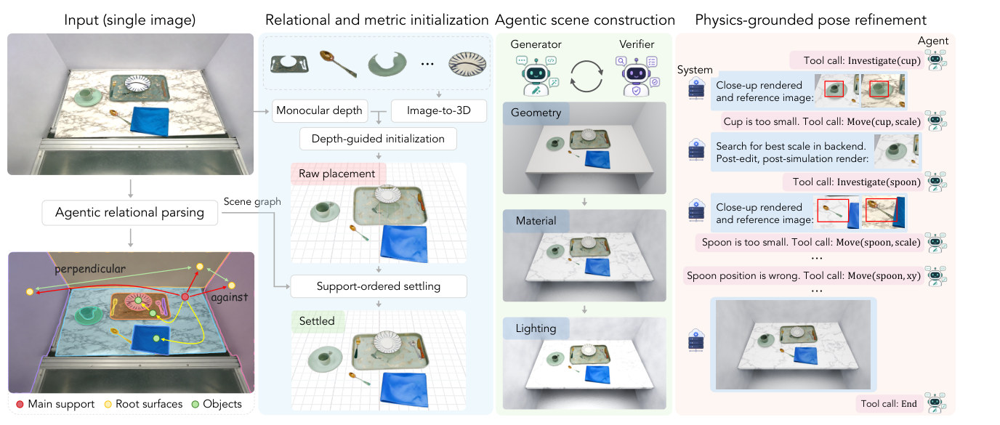
怎么读这张图
- Input (single image) → Agentic relational parsing：VLM 把照片拆成物体和支撑面；下图彩点是 Main support（红，桌面）、Root surfaces（黄，墙）、Objects（绿），连线标着 perpendicular、against 这类关系。这就是 scene graph。
- Relational and metric initialization：上排是 SAM3D 生成的物体网格（盘子、勺子、杯碟…）；Monocular depth + Image-to-3D → Depth-guided initialization 得到 Raw placement，再 Support-ordered settling 得到 Settled。
- Agentic scene construction：Generator 和 Verifier 两个 agent 依次做 Geometry → Material → Lighting：大理石桌板、墙、光照逐步接近照片。
- Physics-grounded pose refinement：右栏是 agent 的 tool call 记录：
Investigate(cup)→ "Cup is too small" →Move(cup, scale)→ 后端 "Search for best scale"；然后 spoon 先改 scale、再Move(spoon, xy)，最后End。
flowchart LR I["Input
一张大理石桌面照片"] --> M["SceneRig
agent + 几何 / 物理工具"] M --> O["Output
USD 场景，80/80 稳定"]:::win
Level 2 · Stages
5 个 stage
flowchart TD S1["1 · Relational parsing
scene graph：spoon#1 在桌上"] --> S2["2 · Metric init + settling
托盘先落，盘子后落"] S2 --> S3["3 · Agentic scene construction
大理石桌板 + 光照"] S3 --> S4["4 · Pose refinement
spoon IoU 0.10 → 0.52"]:::win S4 --> S5["5 · Export to USD
Isaac Sim 里回放"] click S1 href "#stage-1" click S2 href "#stage-2" click S3 href "#stage-3" click S4 href "#stage-4" click S5 href "#stage-5"
点击 stage 展开 Level 3 细节。贯穿所有 stage 的是同一个 persistent Blender scene 和固定的物体 ID（spoon#1 从头到尾叫这个名字）。
Level 3 · Details
每个 stage 的细节
Stage 1 Relational parsing & mask recovery 照片 → scene graph + 每个物体的 mask
- Why：后面每一步都要知道"有哪些物体、谁托着谁"；漏一个杯子或把显示器拆成两半，后面就没法修。
- How：routing VLM 先判断是房间、桌子还是桌面特写，选对应 prompt。
- VLM 按类别列出实例：描述、类型（movable object / root surface）、建议的直接支撑。
- MolmoPoint 给每个实例一个点，SAM3 给每个类别一池 mask，用点去选 mask。
- 检查漏掉的实例、合并重复或拆开的 mask；被挡住的物体用 LanPaint + Qwen-Image-Edit 去掉遮挡再分割，深度用 LingBot-Depth 补。
- 另一个 VLM 审 root surface，关系分四种：
against、perpendicular、corner、under（B.2）。
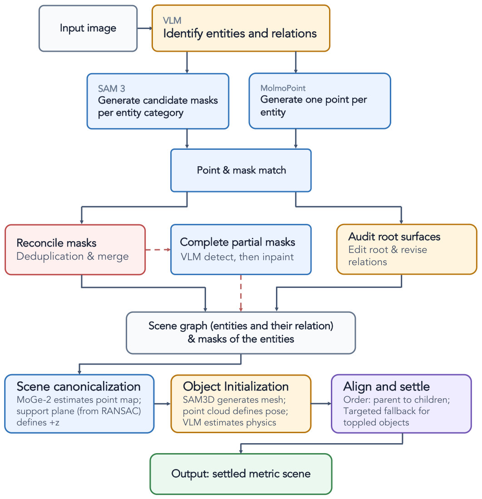
怎么读这张图
- VLM · Identify entities and relations：列出 cup、saucer、spoon、napkin、tray、plate 和桌面。
- SAM 3 / MolmoPoint → Point & mask match：每个实例一个点，点落进哪个 mask 就选它。
- Reconcile masks / Complete partial masks / Audit root surfaces：去重合并、补全被挡部分、修正支撑面。
- 下排三块：就是 Stage 2（canonicalization、object initialization、align and settle）。
Running example 在这一步
照片 → 实例 cup、saucer、tray、plate、spoon#1、napkin#0，root 是桌面（main support）和墙；plate → tray → table、cup → saucer → table 的支撑链。
Stage 2 Metric initialization & support-ordered settling scene graph + masks → 有重力、已落座的 metric 场景
- Why：一次把整个场景放进物理会让物体漂移、翻倒；要先有真实尺度，再从下往上一个个放。
- How：MoGe-2 估相机内参和 metric 点云；机器人有 RGB-D 时直接用测量深度。
- 对桌面拟合 RANSAC 平面：重力沿 −z，桌面在 z = 0。
- SAM3D 生成每个物体的带纹理网格，平移 + 等比缩放到它的深度点上；VLM 估材质和质量，摩擦查表。
- CoACD 做碰撞体；PhysX 里按 parent-before-child 顺序放，离接触面 2 mm 释放。
- 落座后 ICP 调 xy、yaw、scale 去贴合深度点，再仿真一次；倒了就走 fallback（换正立朝向、压低重心、加摩擦）。
flowchart LR a["深度 + 平面
桌面 z = 0"] --> b["SAM3D 网格
对齐深度点"] b --> c["按支撑顺序 settle
tray → plate"]
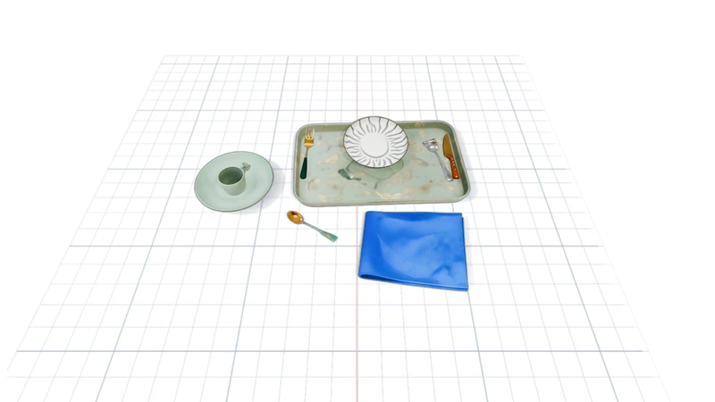
Running example 在这一步
先放 tray，再把 plate 落进托盘；saucer 先于 cup。此时 spoon#1 已经稳定，但位置和尺寸还不对，要到 Stage 4 才修。
Stage 3 Agentic scene construction 落座的物体 → 带桌板、墙、材质、光照的 Blender 场景
- Why：物体要有真实的桌子和墙可以靠，外观要和照片一致，Stage 4 才能拿渲染图和照片比。
- How：三个子阶段依次做：geometry（root 几何）→ material → lighting，每个只能改自己那组变量；物体本身不动。
- 每个子阶段是一对 agent：Generator 改 scene code 并渲染，Verifier 只读，把渲染和照片比，批准或要求修改。
- geometry 阶段多一道确定性的
check_rules门：结构、pose、接触（穿插、悬空、关系）三级检查，过了才交给 verifier。VIGA 和 SEIG 没有这道门。 - 预算：geometry 20 轮、material 10、lighting 10，verifier 各 8 轮（Table 8）。
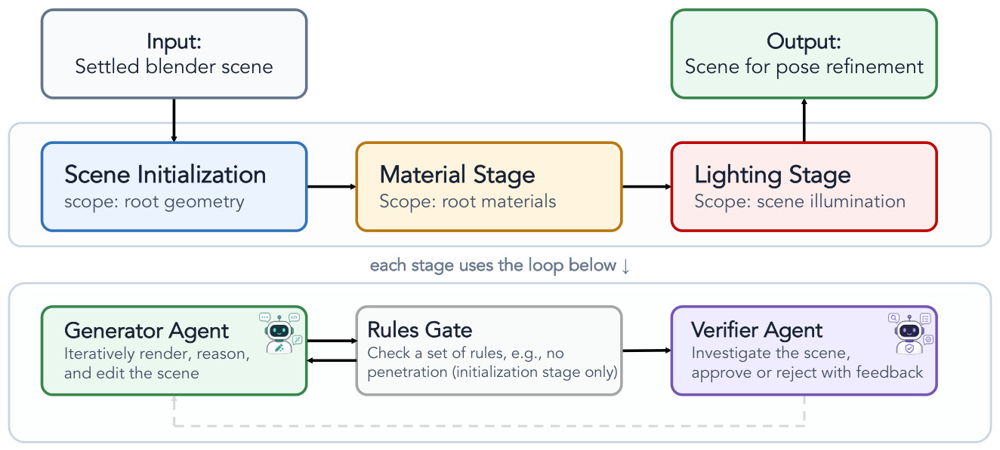
怎么读这张图
- 上排：Input: Settled blender scene → Scene Initialization（root geometry）→ Material Stage → Lighting Stage → Output。
- 下排：每个 stage 内部的循环：Generator Agent → Rules Gate（只在 initialization）→ Verifier Agent，被拒就带着反馈回到 generator。
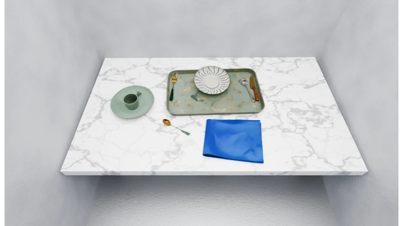
Running example 在这一步
按拟合平面搭出 大理石桌板 和墙，桌面材质换成白底灰纹，光照对齐照片。杯、盘、勺的位置原样不动。
Stage 4 Physics-grounded object pose refinement 稳定但没对准的物体 → 对准照片且仍然稳定
- Why：让 VLM 直接写 "向右移 0.05" 会编出幅度，导致碰撞或不稳定（§3.3）。
- How：一个 agent session，每个物体至少 investigate 一次；预算 min(70, 8 + 5 × 物体数) 轮。
Investigate返回照片和渲染的成对 crop，加上轮廓 IoU、位移、投影大小、yaw、正反（DINOv2）等测量。- agent 选物体和编辑类型（6 选 1：x、y、xy、等比 scale、yaw、180° 翻转），不给幅度。
Move粗到细搜索候选（步长和物体大小成比例），按下面的分数排序，最好的那个放进 PhysX settle。- 接受条件（Eq. 7）：分数提升超过门槛、物理检查通过（不翻、不漂、不新增穿插）、settle 后分数不低于原来；否则恢复原状。
- 托盘这类支撑物被移动时，上面的物体跟着移动再 settle。
Move表达不了时，agent 用Edit直接改 scene code，工具仿真后由 agent 决定保留还是撤销。End只在每个物体都查过、没有未解决的穿插时才算完成。
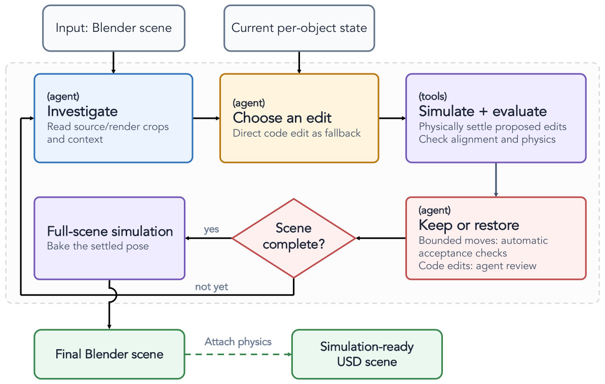
怎么读这张图
- (agent) Investigate → (agent) Choose an edit → (tools) Simulate + evaluate → (agent) Keep or restore：一圈就是一次 edit-and-validate。
- Keep or restore 里的两条规则："Bounded moves: automatic acceptance checks"（Move 自动判），"Code edits: agent review"（Edit 由 agent 判）。
- Scene complete? yes → Full-scene simulation → Final Blender scene → 附物理 → Simulation-ready USD（Stage 5）。
打分里的符号（Eq. 5–7）
| 符号 | 白话 | 例子里 |
|---|---|---|
| IoUo(X) | 物体在位置 X 时，渲染轮廓和照片 mask 的重叠度 | spoon#1 起始 0.10 |
| cIoUo(X) | 先把两个轮廓的中心对齐再算重叠，只看形状和大小 | scale、yaw 用它 |
| Do(X) | 物体中心深度和照片深度的相对误差 | 罚"离相机太近或太远" |
| Qo(X) | 投影面积和照片 mask 面积的偏差 | 罚"看起来太大或太小" |
| Fo(X) | 渲染和照片 crop 的 DINOv2 特征相似度 | 区分朝向（勺头朝哪边） |
| εa | 一次编辑至少要提升这么多分才接受 | 平移 0.01，scale 0.01（Table 8） |
- 平移分 = 重叠度 − 0.4 × 深度误差 − 0.3 × 大小偏差（IoU − 0.4D − 0.3Q）。
- 缩放分 = 同上，但用中心对齐的重叠度（cIoU − 0.4D − 0.3Q）。
- yaw 分 = 中心对齐的重叠度 + 0.2 × 外观相似度（cIoU + 0.2F）。
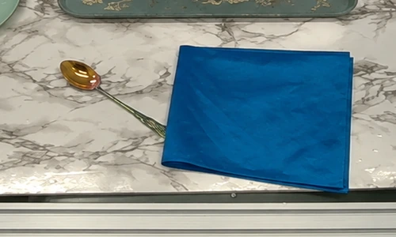
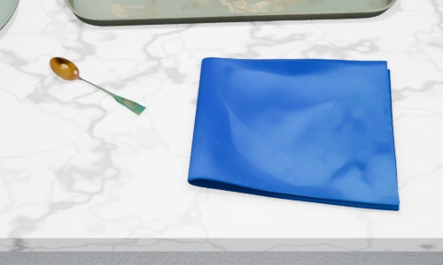
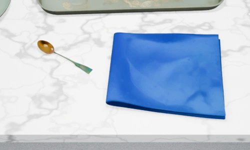
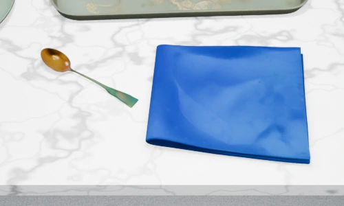
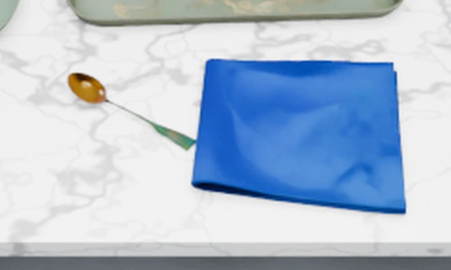
| # | Tool call | 工具返回 | 说明 |
|---|---|---|---|
| 1 | investigate_objects([napkin#0, spoon#1]) | napkin IoU 0.92；spoon IoU 0.10，score 0.007；提示"往右下移" | 餐巾已对准，勺子偏了 |
| 2 | move(spoon#1, xy) | score 0.007 → 0.261，IoU 0.10 → 0.36；settle 后倾斜 0°；仍小约 19% | 后端搜幅度并仿真 |
| 3 | move(spoon#1, scale) | score 0.261 → 0.275，IoU 0.36 → 0.30；大小与照片一致 | scale 分用中心对齐，所以 IoU 降了也接受 |
| 4 | investigate_objects([spoon#1]) | IoU 0.30；仍提示"往右下移" | agent 主动复查 |
| 5 | move(spoon#1, xy) | score 0.275 → 0.488，IoU 0.30 → 0.52；carried along: napkin#0 | 相邻的餐巾被一起带动 |
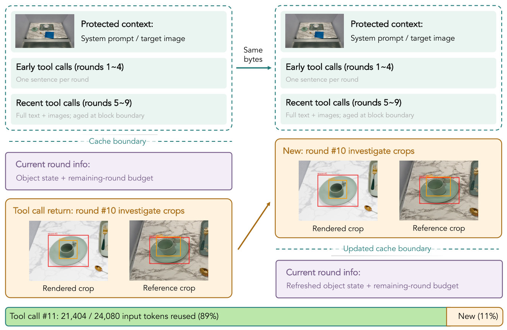
怎么读这张图
- Protected context / Early tool calls / Recent tool calls：两次调用前缀"Same bytes"，可以走 prompt cache；早期轮次压成一句话。
- Cache boundary 下面：每轮变化的东西（物体状态表、剩余预算）放在缓存边界之后，所以不破坏缓存。
- 底部绿条：tool call #11 有 21,404 / 24,080 输入 token 复用（89%）。整个 benchmark 上是 84.1%（2,112 次调用）。
Running example 在这一步
Fig. 2 里先查 cup："Cup is too small" → Move(cup, scale)。然后 spoon#1 走上表 5 步，IoU 0.10 → 0.52，每一步都在 PhysX 里落座过（倾斜 0°），不过关就会回滚。
Stage 5 Scene delivery & USD export Blender 场景 → 可仿真的 USD，进 Isaac Sim
- Why：机器人实验在 Isaac Sim 里跑，要保留物体身份、碰撞体和物理参数。
- How：一次全场景重力仿真，把结果 pose 烘焙进去；不靠 pin 住物体掩盖倾倒，异常记成 warning。
- 烘焙程序化材质，导出网格、纹理、灯光、相机、物体 ID、碰撞体和物理参数到 USD。
- 仿真器端再检查：物体清单、动态/静态、支撑接触、收敛、漂移和末速度。
- 机器人实验里：输入是无手臂的头部相机图 + 测量深度，用标定好的相机位姿把场景配准到机器人（§5）。
Running example 在这一步 · 再来一张图
大理石桌面导出成 USD 就结束了。机器人实验换成工位照片：比如 Fig. 5 的 苹果 + 盘子 + 碗，SceneRig 把苹果和盘子分成两个物体，回放时水果能单独被抓进碗里（见 Results E5）。
Recap：例子覆盖了论文的哪些 idea
| 论文里的 idea | 例子里在哪体现 |
|---|---|
| Relational scene graph（支撑 + root 关系） | Stage 1：plate → tray → table；Fig. 2 里的 perpendicular、against 连线 |
| Point-guided mask、遮挡补全 | Stage 1：MolmoPoint 点选 spoon#1 的 SAM3 mask |
| Metric 初始化（MoGe-2、SAM3D、RANSAC 平面） | Stage 2：桌面 z = 0，网格对齐深度点 |
| Support-ordered settling + ICP | Stage 2：tray 先落，plate 后落 |
Generator–verifier + check_rules | Stage 3：桌板、材质、光照 |
Investigate–edit loop，bounded Move 搜索 | Stage 4：spoon#1 的 5 个 tool call |
| 物理验收和回滚（Eq. 7） | Stage 4：每次 move 都 settle，倾斜 0° |
| 支撑传播 | Stage 4：carried along: napkin#0 |
Edit fallback | 例子没有用到；Table 3 / 11 的 "code edits only" 就是只用它 |
| Context 压缩和 prompt caching | Stage 4：Fig. 9 的 cup + saucer，89% token 复用 |
| USD 导出、真机评测 | Stage 5 和 Results E4、E5：第二张图（苹果 + 盘子） |
Results
更准、全稳，而且这种"准"真能让机器人在仿真里得到和真机一样的结果
顺序同论文：E1 重建是否更准更稳 → E2 物理放置那一步是否必要 → E3 换更强的 VLM 能否代替 harness → E4 仿真能否预测真机 policy 结果 → E5 录好的动作能否在仿真里重放成功。前三个比重建质量和稳定性，后两个比机器人任务的成功和一致率；论文没有比较运行时间，只在 Table 14 报了每个场景的 API 花费。
E1重建得是否比四个 baseline 更准、更稳？§4.2
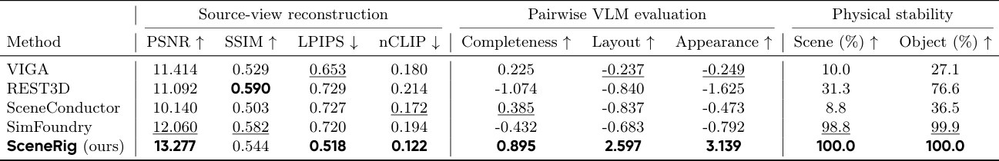
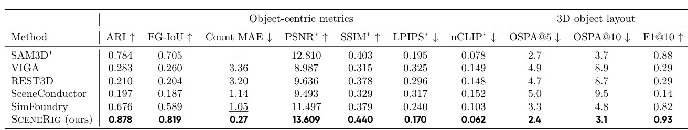
- 说明什么
- 更像、更准、全部稳定。场景稳定率 100.0%，SimFoundry 98.8%，REST3D 31.3%，VIGA 10.0%，SceneConductor 8.8%；VLM 偏好 Layout 2.597，次好是 VIGA −0.237（Table 1）。ARI 0.878 vs SAM3D* 0.784，OSPA@5 2.4 cm vs 2.7 cm，VIGA 4.9 cm（Table 2）。唯一输掉的是 SSIM：REST3D 0.590 vs 0.544。
- 在故事里
- 回应 Problem：别人要么好看不稳（VIGA），要么稳但不准（SimFoundry），SceneRig 两头都要。
- 指标
-
- 稳定：PhysX 跑 5 s 后位移 < 50 mm 且末速度为 0；场景里每个物体都通过才算场景通过。
- OSPA@5：位置误差和多余/缺失物体一起罚，5 cm 截断，先做全局尺度对齐，单位 cm。
- VLM 偏好：GPT-5.6-terra 和 Qwen3.5-122B 两个裁判成对比较，Bradley–Terry 分数，裁判间 κ = 0.87。
- 怎么评测
- 80 张桌面图：44 张模拟器渲染（RoboDojo、RoboLab，有真值），18 张真机工位、6 张手机照、8 张网图、4 张 AI 生成图；物体级指标只在 44 张上算。
- 所有方法用 Claude Opus 5；VIGA 加了"每个物体一个 parent"的 prompt 和 20 轮预算；REST3D 不保存相机，用近似恢复的相机，这对它的 source-view 分数不利。
E2物理约束的放置（settling + Move）是否必要？§4.3 · D.1 · C.5
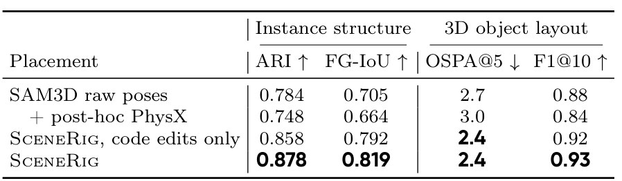
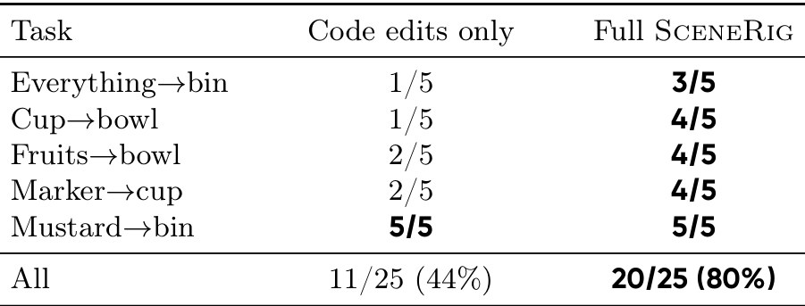
Move 后的成功数。- 说明什么
- 事后 settle 有害，
Move对机器人任务很关键。SAM3D 原始 pose 加 PhysX settle：ARI 0.784 → 0.748，OSPA@5 2.7 → 3.0。只用Edit（code edits only）的重建指标只差一点（ARI 0.858 vs 0.878，OSPA@5 都是 2.4），但回放成功率从 20/25（80%）掉到 11/25（44%）。 - 在故事里
- 证明核心贡献是 bounded
Move工具，而不是"有 agent 就行"；也说明重建指标看不出对操作要紧的放置差别。 - 指标
- 同 E1；回放成功的定义见 E5。
- 怎么评测
- 四个变体共用分割、资产、相机、支撑面、材质和光照，只换放置。
- 回放消融用和 E5 同一批 25 条示范、同样的控制器和打分。
E3换更强的 VLM，能不能不要这套 harness？§4.3 · D.1 · D.2
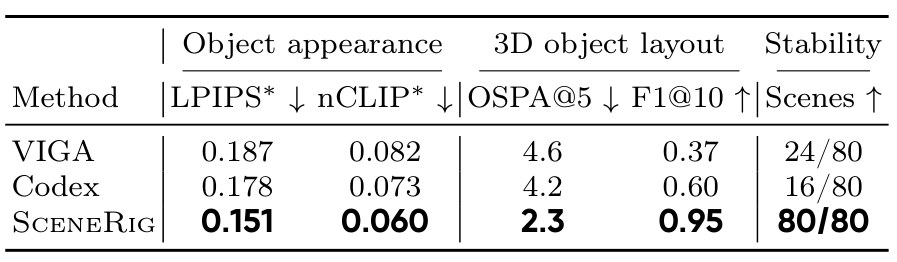
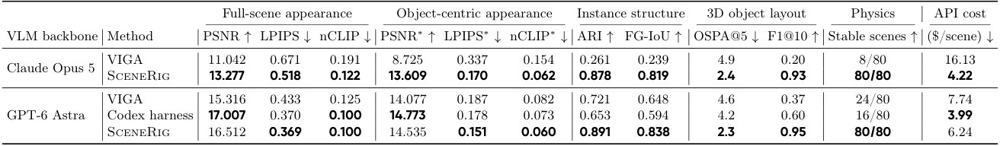
- 说明什么
- 更强的 VLM 改善外观，不解决放置和稳定。同用 GPT-6 Astra：稳定场景 80/80，VIGA 24/80，通用 coding agent（Codex harness）16/80；OSPA@5 2.3 vs 4.6、4.2 cm。Codex 的全图 PSNR 最高（17.007 vs 16.512）。SceneRig 内部从 Opus 5 换成 Astra，PSNR 13.277 → 16.512，OSPA@5 只从 2.4 到 2.3（Table 12）。每场景花费 $4.22（Opus）/ $6.24（Astra），VIGA + Opus 是 $16.13。
- 在故事里
- 排除"等下一代模型就好了"：放置和稳定来自 harness 的结构、metric 和物理工具。
- 指标
- 同 E1；Stability 是 80 个场景里通过稳定测试的个数。
- 怎么评测
- VIGA 和 Codex 没有物理阶段，所以先给它们的场景做 5 s PhysX settle（每个物体为刚体、凸包碰撞），再算外观和布局；稳定性在这次 settle 中测。
- Codex：GPT-6 Astra、ultra reasoning，只许用 Blender，不许用外部模型和资产，6 小时超时，最多两次尝试。
E4在重建场景里跑 policy，结果能不能预测真机？§5.1 · C.4
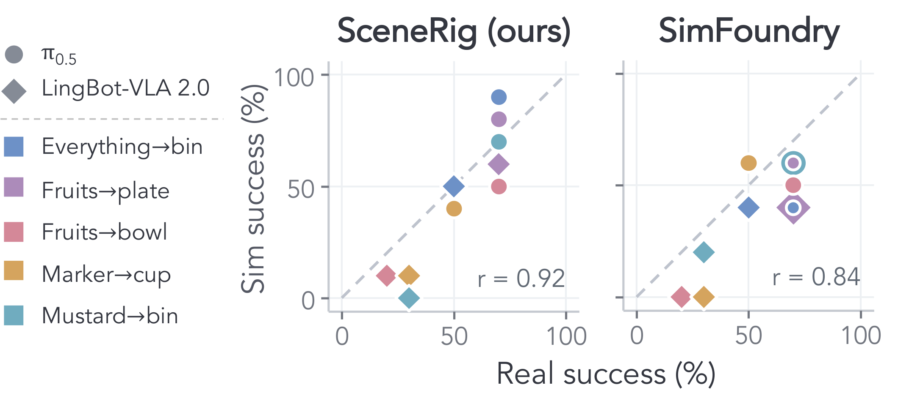
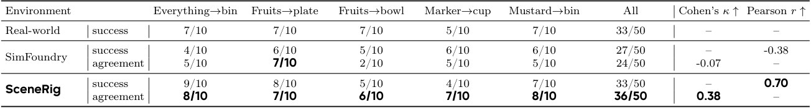
- 说明什么
- 仿真结果和真机更一致。两个 policy 合计，逐 episode 一致率 69% vs 54%（McNemar p = 0.017），Cohen's κ 0.38 vs 0.09；任务级成功率相关 r = 0.92 vs 0.84，MMRV 0.04 vs 0.11（Table 10）。分开看：π0.5 72% vs 48%（p = 0.023）；LingBot-VLA 2.0 66% vs 60%（p = 0.55，不显著）。
- 在故事里
- 回答"更准的重建对机器人有没有用"：可以拿 SceneRig 场景代替一部分真机评测。
- 指标
- 一致率：仿真和真机的成功/失败判断相同的 episode 比例；κ 扣掉偶然一致。
- MMRV（沿用 SIMPLER）：仿真把两个任务的难易排反时，真机成功率差多少，越低越好。
- 仿真成功：按物体最终位置的几何判据（如是否在 bin 的包围盒内），脚本判、人复核；真机成功由操作员判。
- 怎么评测
- π0.5 和 LingBot-VLA 2.0（同一批内部遥操作数据微调），5 个任务 × 10 episode × 2 policy = 100 个真机 episode。
- 每个 episode 用无手臂头部相机图重建，给两种方法同样的测量深度（LingBot-Depth 补洞）和内参；Isaac Sim 240 Hz 物理、30 Hz 控制，每 50 步重新 query policy。
- SimFoundry 不重建桌子，用的是 SceneRig 的桌子网格加 SimFoundry 的桌面贴图（C.4）。
E5录好的真机动作，能不能在重建场景里原样重放成功？§5.2 · C.5
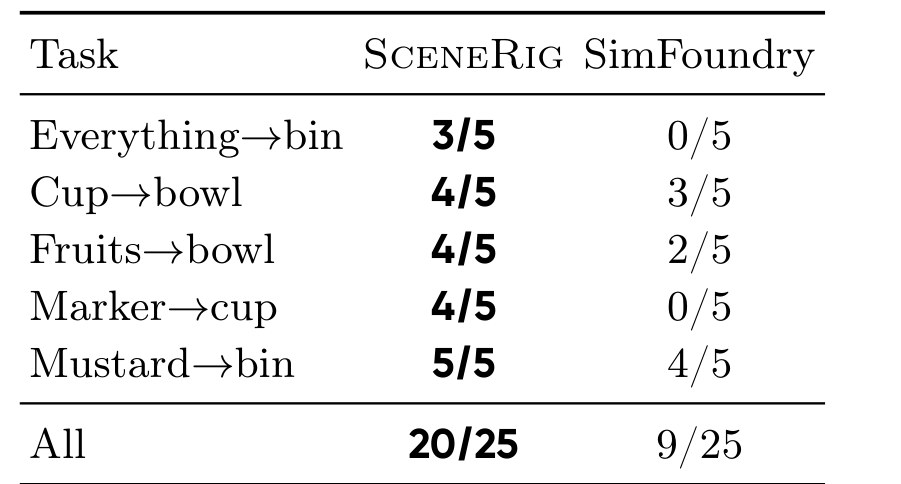
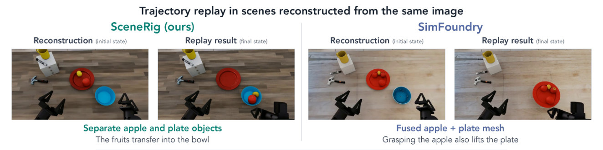
- 说明什么
- 回放成功率高一倍多。20/25 vs 9/25（McNemar p = 0.001），每个任务都不低于 SimFoundry；SimFoundry 成功的 9 条 SceneRig 全部成功。SimFoundry 失败原因：缺物体、容器位置错、几何挡住机械臂（§5.2）。
- 在故事里
- 最直接地检验"位置对、物体分开、物理对"：动作是死的，场景错一点就失败。
- 指标
- 按 E4 的几何判据给最终位置打分，人复核；缺少必需物体算失败；"everything into bin" 只数示范里真正被搬动的物体。
- 怎么评测
- 双臂工位上 25 条成功的遥操作示范（5 任务 × 5），每条 1–6 个物体；用 ChArUco 标定的相机和机械臂位姿。
- 回放记录下的 follower 关节轨迹，先 settle 0.5 s；不 query policy、不调整轨迹、无人干预。两种方法共用指令、标定、增益和物理设置。
Limits
局限和开放问题
- 主要针对桌面；房间场景遮挡多、深度歧义大、接触多，作者说仍然难（§6）。
- 每个物体是一个刚体：不恢复关节和形变（§6）。
- SAM3D 资产没有 PBR 材质，限制真实感（§6）。
- LingBot-VLA 2.0 上一致率优势不显著（66% vs 60%，p = 0.55，Table 10）；两种重建都低估了它的真机成功率（13/50、10/50 vs 20/50）。
- 机器人实验给两种方法都喂了测量深度，单目情况下的机器人表现没有测。（我的观察）
- 依赖很多外部模型（Table 7：VLM、MolmoPoint、SAM3、MoGe-2、SAM3D、LanPaint、Qwen-Image-Edit、LingBot-Depth、SHARP、GPT-Image-2、DINOv2），每场景 $4–6 API 花费；运行时间没有报告。
For Agent-centric real-to-sim
对我们有什么用
- WorldClaw 的 white-box scene → Genesis：别让 agent 直接写坐标；照
Move做一个"agent 选物体和编辑类型、工具搜幅度、Genesis 里 settle 验收、失败回滚"的工具。 - real2sim-anything-indoor（video → Blender room）：SceneRig 自认房间仍难，但它的支撑图顺序 settle 和 root 关系（against / perpendicular / corner / under）可以直接搬到家具摆放；视频比单图多视角，正好补它的深度歧义。
- 评测我们的 real2sim 场景：照搬开环回放（便宜、对放置敏感）和 episode agreement / MMRV；E2 说明只看重建指标会漏掉要紧的放置误差。